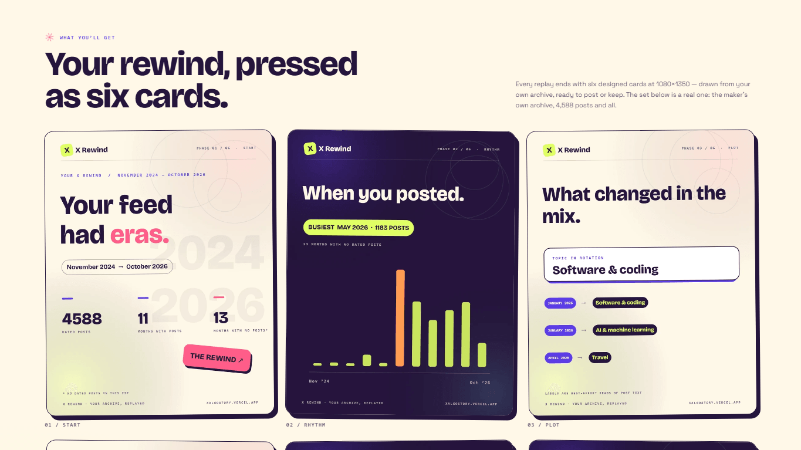
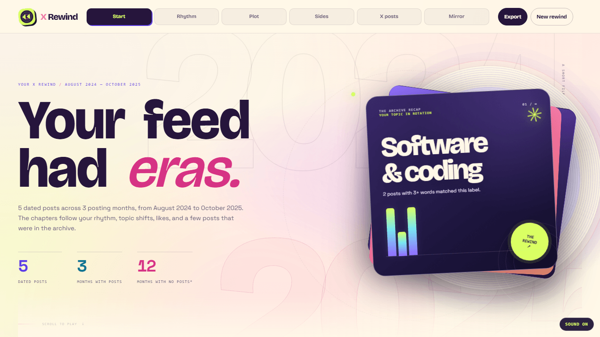
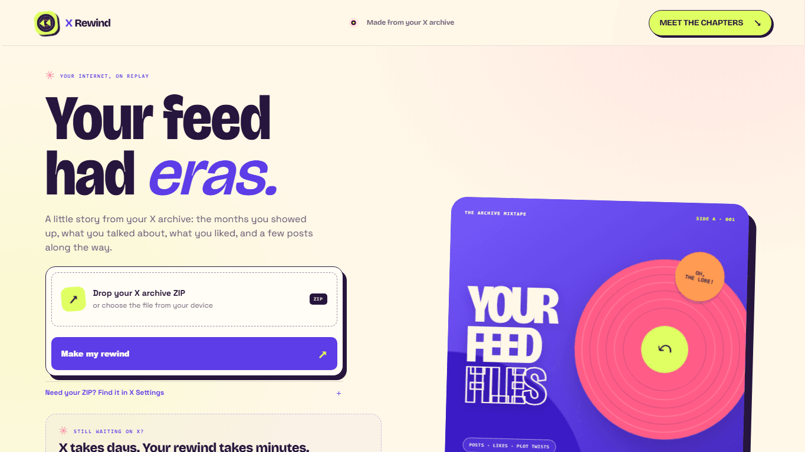
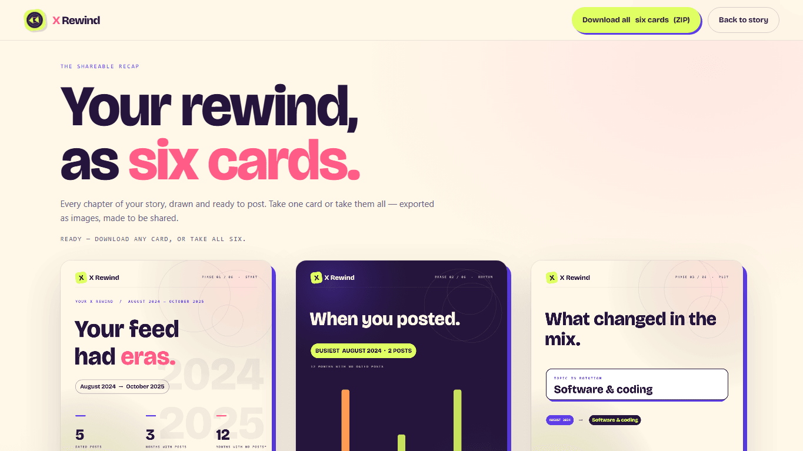
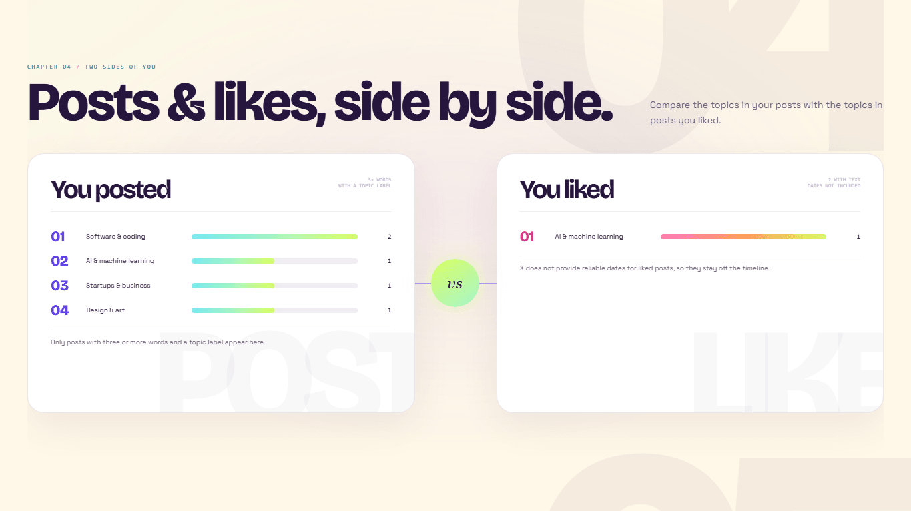

X Rewind
An archive-to-story product that turns a raw X export into a cinematic replay—the months you showed up, the topics you drifted through, the posts still in frame—ending in six designed cards you can download and share.





Context
X hands every account a full archive export—thousands of posts, likes, DMs, and the interest list X quietly inferred about you—as a ZIP of machine-readable files almost nobody ever opens. The good part is sitting in there unread: how you actually used the platform, the months you showed up, the topics you moved through, the posts that still hold up.
What I built
X Rewind replays the archive back as a story. An upload pipeline accepts exports up to ~400MB, processes each one inside an isolated serverless sandbox worker, and deletes the file the moment parsing finishes. The parser rebuilds the timeline from the archive’s own data—posting rhythm and long gaps, topic shifts, posts versus likes, post snapshots, and the interest list X saved—then renders six designed 1080×1350 cards on canvas, downloadable as individual PNGs or one ZIP. DMs are excluded by design, sessions live 12 hours, and there is no sign-in and no cost.
Why this approach
Archive tools usually fail two ways: invented insight or noisy labels. A summary that fabricates patterns is worse than no summary, so every chapter is deterministic—drawn from rows in the user’s own archive, not generated prose. And a post that merely mentions a topic must never read as a claim about it, so labeling is precision-first: tiered keyword rules backed by embedding checks, tuned against a 110-case adversarial suite that must stay green before anything deploys. If the data is thin, the story says so instead of padding.
Role & scope
End to end: the parsing and classification pipeline, the sandbox worker infrastructure, the story and card front-ends, the canvas export, and the adversarial eval harness that gates every release.
Result · launch week
Live and free, with no account. The archive on display in the product is my own: 4,588 dated posts from November 2024 to October 2026, including 1,183 posts in the single busiest month, and 129 interests X had silently inferred.
Every release ships behind the same gate: the 110-case adversarial eval, a full local verification suite, and an end-to-end production smoke test—upload, parse, story, export—all green before deploy. The story only claims what the data shows, and the cards only draw from what the story verified.